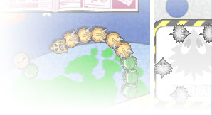
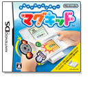
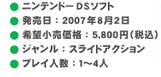
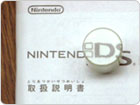
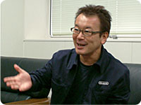

|  | |||
|  |  |
||
| まず、みなさんがどのようにこのソフトに関わったのか、役割を聞かせていただけますか？ |
清水：私は今回のゲームソフトの企画を担当しました。
伊藤：スライドコントローラの中にある基板の設計をしております。基板に乗せるパーツの選抜も担当しました。
秋田：スライドコントローラの機構設計を担当しました。デザイナーが決めたスライドコントローラの外観を元に、筐体の設計や基板外形の設計などをしていくのが機構設計の役割です。
| 『マグキッド』とスライドコントローラはどのように生まれたのでしょうか？ |
秋田：これが当時のプロトタイプです。市販のパソコン用マウスを改造して、その上にゲームボーイアドバンスＳＰを乗せた形なんですよ。
上村：私が所属している部署は、従来のゲーム機とは別の新しい遊びを探す部署でした。当時はコンピュータと何かを組み合わせた遊びを模索していて、例えば『ポケモーション』などを開発していました。
秋田：ゲーム以外のものにもアンテナを張って新しい遊びを探していましたね。部署内には色々なおもちゃが転がっていたりして。
伊藤：とりあえず色々なメーカーさんの新製品は必ずありましたね。
上村：スライドコントローラを思いついたのは、電気製品ではないのですが、
テレビ石（※）と呼ばれる鉱石がインスピレーションの源でした。このように文字や絵の上に置くと……のぞき込んでみてください。
※ テレビ石・・・正式には、曹灰硼石（そうかいほうせき）という名前の鉱物。
| あっ、文字が浮き出て見えます。不思議です。 |
清水：で、あるとき上村たちが「こんなものがある」とスライドコントローラのプロトタイプを見せてくれて。そこで遊べたのが「金魚すくい」というテストプログラムでした。
上村：『マグキッド』の製品版の方にもこのテストプログラムと同じ名前のミニゲームが入っているのですが、当時は社内の色々な部署へプロトタイプを持ち込んで、面白いソフトができないかと売り込みをしていました。
清水：上村が持ってきた「金魚すくい」を遊んでみると、何か自分の心へ響くものがありました。ゲームボーイアドバンスＳＰを動かしながら実際に金魚すくいを遊んでいる気分になれたんです。いわば液晶画面にのぞき窓みたいなイメージを抱いたんですね。実際の世界では机の上なのですが、こののぞき窓の奥にはバーチャルな水槽がたしかにあるという印象でした。
上村：元々はパソコンのマウスだったのですが、マウス自体に画面がくっついたことで、全く新しいものができあがりました。
清水：例えば、パソコンでマウスを動かすとき、視線は画面の中のマウスカーソルに向いていて、マウス自体が動いていることは気にしませんよね。それがマウス自体に画面が付いていることで、マウス自身の動きと画面の中の動きがリンクする。バーチャルな世界の動きと現実の世界の動きに一体感が生まれることで、バーチャルな世界に現実感を与え、また直感的な操作感を生むことにも繋がっていきます。ニンテンドーＤＳの中に違う世界があって、その世界を直感的に体験できる。もう、そこがスライドコントローラの肝だと思うんですよ。
上村：清水からその例え話を聞いた瞬間に「きたっ！」と思いましたね。
清水：「金魚すくい」を触ったあと、自分の中に思い浮かんだ企画が『マグキッド』の始まりです。
| ゲーム内容・テーマが今回のものに決まった具体的な経緯は？ |
おそらくミニカーなどで遊んでいるお子さんも、どこで遊んでいようと街の中でミニカーを走らせている気分だと思うんです。
上村：こうして清水が作った企画が、私の上司の目にとまり、スライドコントローラとそのソフトの制作が始まりました。
清水：じつを言うと、私自身は昔から今回のようなパターンでソフト制作をすることが多かったんです。バーチャルボーイ用のソフトなど、当時から新しい遊び、面白そうなものにすぐに反応してました。